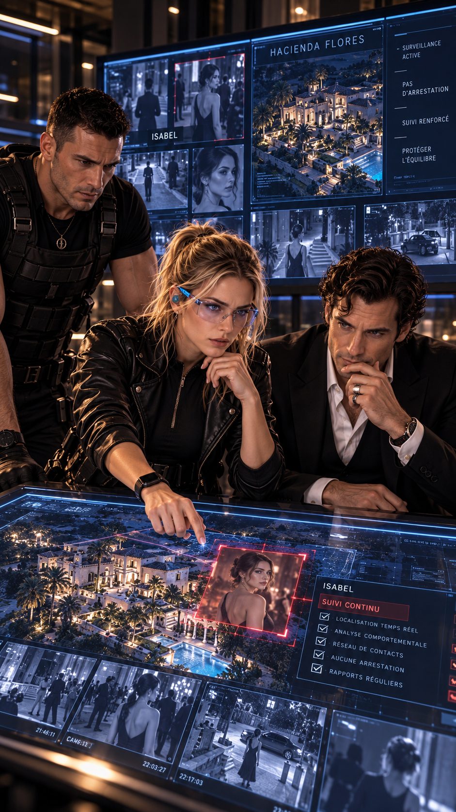
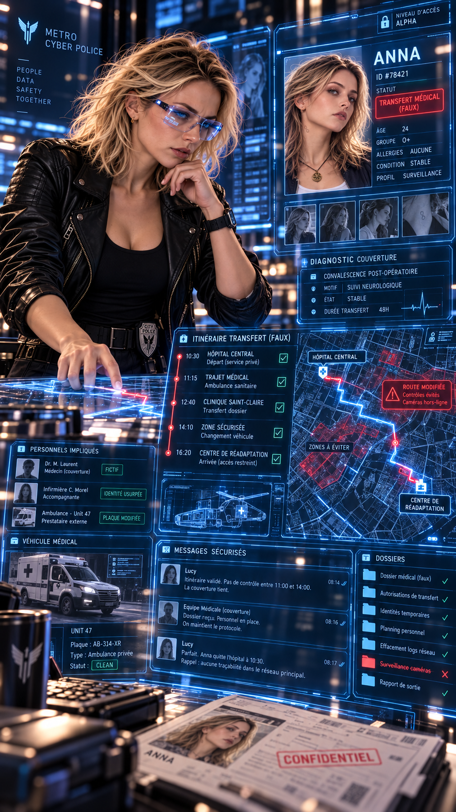
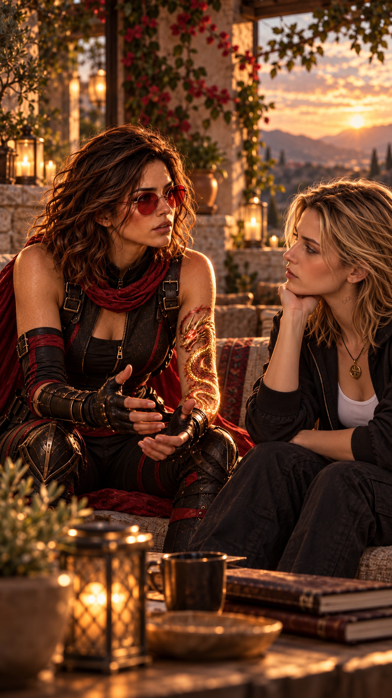
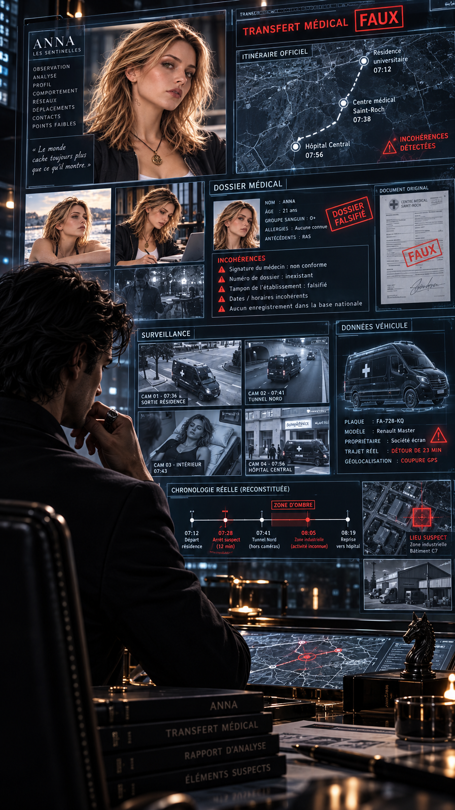
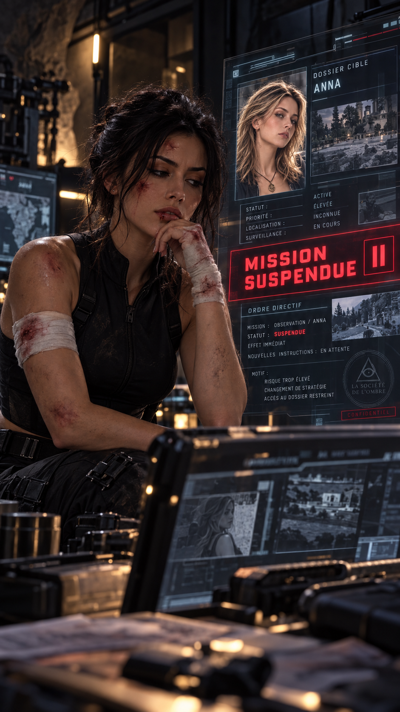
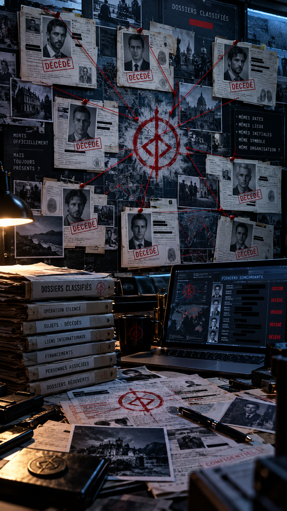
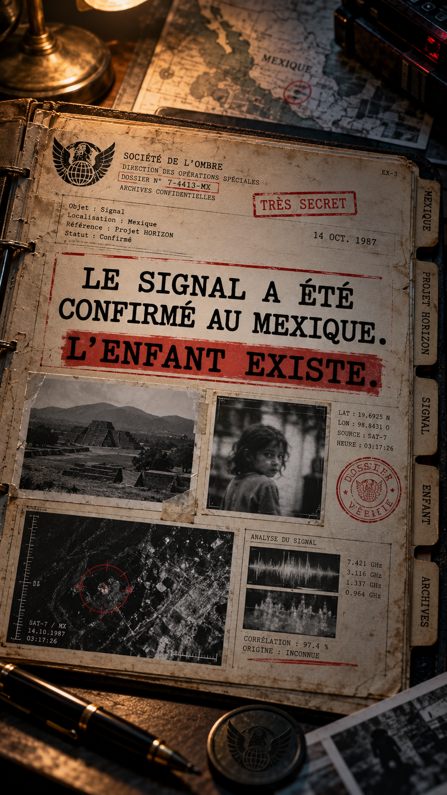
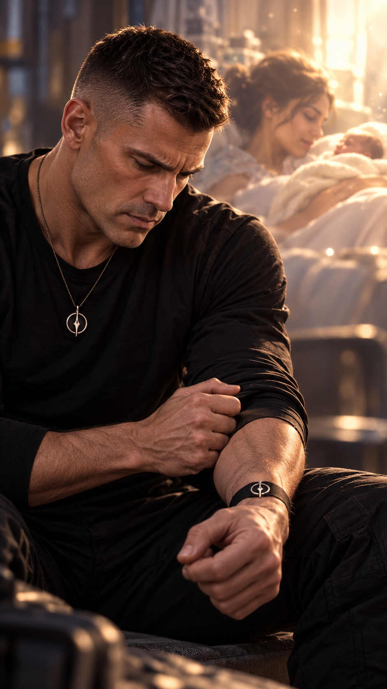

Hacienda Flores.
Isabel Ortega traverse le grand hall comme elle le fait depuis des années.
Même démarche.
Même sourire discret.
Même classeur contre elle.
Depuis la salle de sécurité, Hale la regarde sur un écran.
Clive observe alternativement Hale et les images de vidéosurveillance.
— Tu vas finir par traverser l’écran avec ton regard.
Hale ne réagit pas.
Lucy demande :
— Tu la connais depuis combien de temps ?
Hale hésite.
— Dix-huit ans.
Clive cesse de sourire.
— Dix-huit ?
— Elle est arrivée environ un an après Anna.
Tout semble parfaitement normal.
Et c’est précisément ce qui la rend dangereuse.

Hale murmure :
— Anna lui fait confiance.
— Betty aussi.
Puis :
— Et moi aussi.
Clive se redresse.
— Alors on ne l’arrête pas.
Hale tourne brutalement la tête.
— Pardon ?
Lucy regarde Clive.
— Développe.
— Vous avez enfin trouvé une taupe qui transmet probablement des informations depuis presque deux décennies.
Clive sourit légèrement.
— Et vous voulez immédiatement lui faire savoir qu’elle a été découverte ?
Hale comprend.
Une taupe identifiée est plus utile qu’une taupe arrêtée.
Lucy acquiesce.
— On la laisse travailler.
Maintenant, c’est nous qui allons l’observer.

Lucy affiche plusieurs schémas sur l’écran principal.
Première règle :
personne ne change de comportement avec Isabel.
Deuxième règle :
lui donner une information que personne d’autre ne possède.
— Anna quittera discrètement l’Hacienda Awake après-demain matin.
Hale demande :
— Destination ?
Clive répond :
— Laboratoire de Peter.
Lucy acquiesce.
— On dira qu’elle doit subir des examens supplémentaires à cause de ce qu’on vient d’apprendre sur sa naissance.
Hale grimace.
— Utiliser ça comme appât ne va pas me plaire.
Lucy répond calmement :
— Anna ne bougera pas.
— Personne ne sera exposé.
On veut seulement savoir si l’information quitte cette maison.
Et surtout où elle va.
Hacienda Awake.
Anna est assise seule à l’extérieur.
Elle tient une tasse qu’elle ne boit pas.
Max arrive sans bruit.
Il s’installe à quelques mètres.
Anna demande :
— Si toute mon histoire commence par une expérience…
Elle s’arrête.
— Comment je sais ce qui est vraiment moi ?
Max désigne sa tasse.
— Tu aimes le café ?
— Non.
— Ta mère ?
— Beaucoup trop.
Max sourit.
— Donc manifestement, la génétique n’explique déjà pas tout.
— Ton origine peut expliquer pourquoi tu existes.
— Elle peut peut-être expliquer certaines capacités.
— Mais elle ne décide pas de ce que tu fais de tout ça.
C’est toi qui choisis.

Hope apparaît au bout du chemin.
Elle avance encore avec une légère raideur.
Max se lève.
— Essaie de ne pas lui révéler l’existence d’une nouvelle civilisation extraterrestre avant le déjeuner.
Hope sourit.
— Je vais essayer.
Anna regarde Hope.
— Est-ce que j’ai le droit d’être en colère contre elle ?
— Oui.
La réponse est immédiate.
— Tu as même le droit d’être furieuse.
— De ne pas vouloir lui parler.
— D’avoir besoin de temps.
Anna baisse les yeux.
— Mais elle voulait me protéger.
— Oui.
— Comprendre n’oblige pas à pardonner immédiatement.
Et pardonner un jour ne signifie pas que ce qu’elle a fait était juste.
Anna reprend :
— Tu crois vraiment que je suis ce truc dont parlent les fresques ?
— L’Équilibre ?
Anna acquiesce.
Hope réfléchit.
— Je crois que quelque chose te relie à ces fresques.
— Et à la fiole.
— Mais je refuse de décider à ta place ce que ça signifie.
Anna demande :
— Et si les Gardiens ont raison ?
— Si je peux vraiment devenir dangereuse.
Hope la regarde longuement.
— Tout le monde peut devenir dangereux.
— Ça dépend des moyens qu’il possède.
— Et des choix qu’il fait.
Le danger serait que quelqu’un d’autre décide à ta place de ce que tu dois devenir.
Anna sourit.
— Jusqu’à quand tu me protégeras ?
— Jusqu’au jour où tu n’auras plus besoin de moi.
Sierra Madre Oriental — Hidalgo.
Hacienda de la Sierra.
Le domaine semble presque endormi.
Perdu entre les montagnes.
Une ancienne hacienda restaurée avec un soin remarquable.
Pierre sombre.
Bois ancien.
Jardins parfaitement entretenus.
Aucun signe extérieur ne laisse penser que sous le bâtiment principal s’étend un réseau de galeries beaucoup plus ancien que la propriété elle-même.
Dans l’une de ces salles, un homme lit un rapport.
On ne voit pas clairement son visage.
Le Maître Noir.

Une notification arrive sur l’écran.
Un changement de planning.
A.F. — transfert médical exceptionnel — dans deux jours.
Le lieutenant s’approche.
— Anna va se déplacer.
Le Maître Noir lit le message une seconde fois.
Puis :
— Non.
— Maître ?
— Trop propre.
— Trop logique.
— Trop facile.
— Un piège.
— Vous voulez que nous ignorions l’information ?
Le Maître Noir secoue lentement la tête.
— Surtout pas.
— Nous allons leur laisser croire que nous mordons à l’hameçon.
— Préparez une équipe.
— Pour Anna ?
— Non.
Le Maître Noir se lève.
— Pour ceux qui surveillent Isabel.
— Je veux savoir jusqu’où Lucy Adverse et Clive Lynx sont capables de remonter.
Il marche vers une carte du Mexique gravée dans la pierre.
Puis pose un doigt sur l’Hacienda Flores.
— Et surtout… je veux savoir ce que Hale sait réellement.

Quelque part dans l’État de San Luis Potosí.
Amy ouvre les yeux.
Elle est allongée sur un lit.
Son épaule est bandée.
Plusieurs ecchymoses couvrent son corps.
Amy repère sa tablette sur une table.
Elle tend la main.
Un message l’attend.
MISSION A.F. SUSPENDUE.
Amy reste parfaitement immobile.
Puis elle relit.
Une deuxième fois.
— Suspendue ?
— Ordre direct.
Amy serre la tablette.
Elle regarde la photographie d’Anna.
Cette histoire ne s’arrête plus avec un ordre.
Anna est devenue son affaire. Et Hope aussi.
Le soir est tombé.
Isabel termine son service.
Elle salue Hale.
— Bonne soirée.
Hale répond comme il le fait depuis des années.
— Bonne soirée, Isabel.
Plus tard dans la nuit, Clive retourne seul dans l’oratoire.
Pas de lumière.
Pas de caméra visible.
Clive sourit.
Une minuscule cavité est dissimulée derrière la plaque.
Vide.
Il observe.
— Dépôt mort.
Lucy demande dans son oreillette :
— Quoi ?
— Un endroit où elle dépose quelque chose.
— Quelqu’un vient le récupérer sans qu’ils aient besoin de se rencontrer.
Hale murmure :
— Donc on peut attendre celui qui vient chercher.
— Exactement.

Puis Clive remarque quelque chose.
Une infime marque au fond de la cavité.
Il la photographie.
Lucy agrandit immédiatement l’image.
Lucy observe l’image.
Son visage change.
— Hale…
— Quoi ?
— J’ai déjà vu quelque chose de similaire.
— Où ?
— Dans les dossiers des hommes officiellement morts.
Silence.
Lucy retourne vers IA2.
— Analyse ce symbole.

Plusieurs documents anciens apparaissent.
Plusieurs identifiants.
Des transmissions bien antérieures à Isabel.
Lucy ouvre un fichier.
Le document date de dix-neuf ans plus tôt.
Quelques mois seulement après la naissance d’Anna.
Le contenu est extrêmement court.
LE SIGNAL A ÉTÉ CONFIRMÉ AU MEXIQUE.
L’ENFANT EXISTE.
Lucy vérifie les métadonnées.
Origine inconnue.
Destinataire masqué.
Puis une autre trace apparaît.
Quelques jours seulement après la naissance d’Anna.
RÉACTIVATION.

Hale recule légèrement.
Lucy le remarque.
— Tu connais ce mot.
Hale hésite.
Puis regarde son poignet.
Pendant dix-neuf ans, le symbole des Sentinelles est resté dissimulé.
Mais Hale se souvient parfaitement du premier jour où il est apparu.
Le jour où Anna est née.
Lucy comprend à son expression.
— Hale ?
Il relève lentement les yeux.
— Maître Lee m’avait envoyé ici pour surveiller une fiole.
— Pas un enfant.
Il regarde le message.
LE SIGNAL A ÉTÉ CONFIRMÉ AU MEXIQUE.
L’ENFANT EXISTE.
Lucy murmure :
— Quelqu’un, quelque part, l’a su presque immédiatement.
Clive regarde l’écran.
— Alors la vraie question n’est plus de savoir depuis combien de temps Isabel espionne Anna.
Lucy acquiesce.
Mais comment ils ont su qu’elle existait avant même d’avoir quelqu’un à l’intérieur.
Hacienda de la Sierra — Hidalgo.
Le Maître Noir se tient seul devant un immense mur de pierre.
Au centre :
le même symbole.
Une lumière discrète apparaît.
Puis une voix électronique.
— ANOMALIE DÉTECTÉE.
— Où ?
— HACIENDA FLORES.
Le Maître Noir sourit.
— Ils remontent le fil.
Quelques secondes passent.
— Et Hale ?
— ACTIF.
Son sourire disparaît.
— Alors il se souvient.
Il approche une main du symbole.
— Voyons jusqu’où Maître Lee lui a dit la vérité.
Derrière lui, une porte s’ouvre.
Un homme entre.
— Maître.
— Oui ?
— Nous avons retrouvé une trace liée au premier signal.
Le Maître Noir se retourne.
— Où ?
L’homme hésite.
— Pas au Mexique.
Silence.
— Alors où ?
L’homme lui tend la tablette.
Le Maître Noir regarde l’écran.
Son expression change pour la première fois.
— Impossible…
Puis son regard se durcit.
— Préparez mon départ.
— Pour où ?
— Là où tout a commencé.
Lucy et Clive pensent avoir commencé à remonter le réseau.
Le Maître Noir, lui, sait déjà qu’ils le cherchent.
Et quelque part, une trace vieille de dix-neuf ans vient de rouvrir une route oubliée.
Le jeu commence.